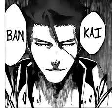
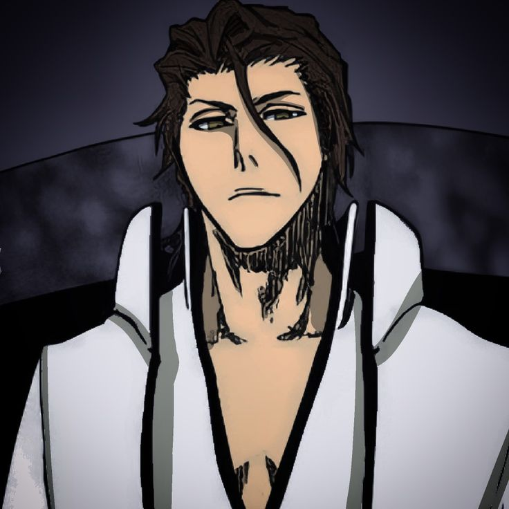

Сосуке Айзен — бывший капитан пятого отряда Готея 13. Его лейтенантом была Момо Хинамори. Он покинул Общество душ вместе с двумя последователями, Гином Ичимару и Канаме Тоусеном. Он собрал армию арранкаров и объявил войну Обществу душ. В конце концов, Айзен был повержен Ичиго Куросаки и запечатан Кисуке Урахарой, затем заключён в тюрьму за свои преступления.  